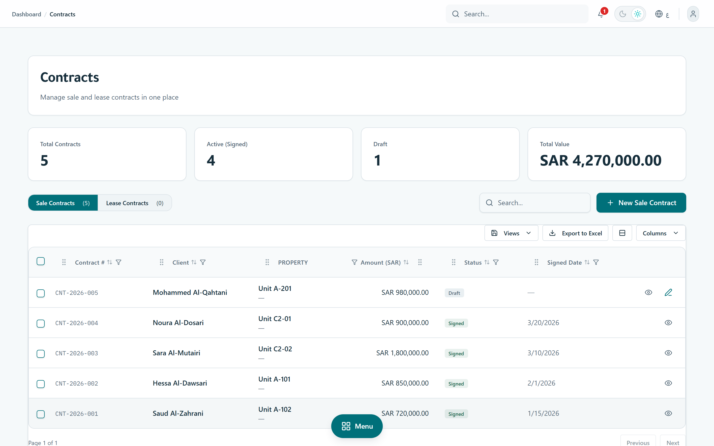
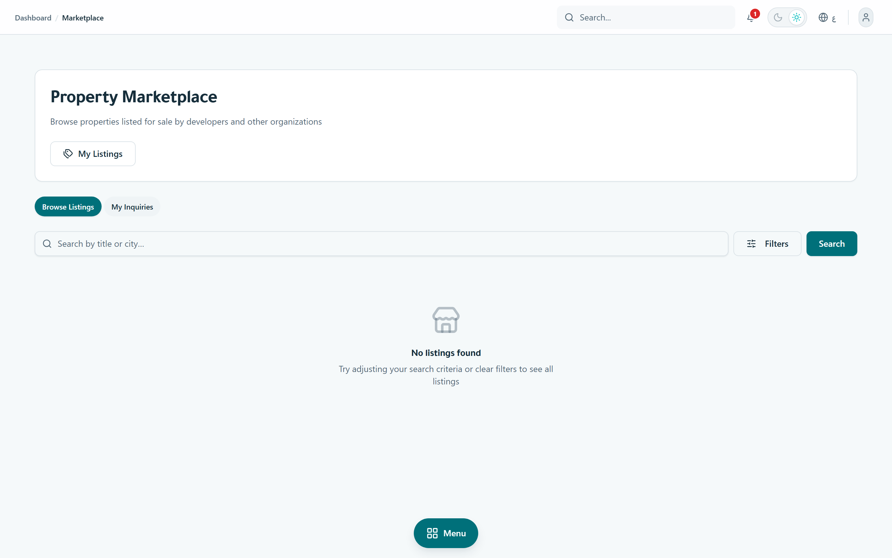

Product State Dossier · v5.12.0 · June 2026
The Saudi property lifecycle, run on one compliant system.
Mimarek is a Saudi-first PropTech platform that takes a real-estate developer or manager from lead to lease to collection to maintenance — in Arabic, on one tenant-isolated system, aligned with ZATCA, Absher, MOC, REGA and Saudi data-protection law. This dossier is the authoritative account of what is built today, prepared so a go-to-market team can position, price and sell from verified product truth.
01 · Executive summary
A complete product, hardened and waiting on go-to-market.
Mimarek (v5.12.0) is feature-complete across the entire property lifecycle, security-hardened through a 19-finding audit sweep, and built Arabic-first for the Saudi regulatory environment. What it does not yet have is customers — it is pre-launch by choice, not by limitation.
What this means
The engineering risk of building a compliant Saudi PropTech system is already retired. The remaining work is commercial: deployment, pricing, positioning, and the regulated go-lives (production ZATCA, marketplace conveyance) that need external sign-off, not code.
How to read this document
Every capability carries a status tag. Nothing here is aspirational unless explicitly labelled. Figures shown inside screenshots are illustrative demo data, not business metrics — real traction and pricing are marked as founder input required.
02 · الملخص التنفيذي
منتجٌ مكتمل وجاهزٌ للتشغيل، بانتظار التسويق والمبيعات.
معمارك منصةٌ سعوديةٌ متكاملة لإدارة دورة حياة العقار — من العميل المحتمل إلى الحجز والعقد والتحصيل والصيانة — مبنيةٌ أصلاً للسوق السعودي ولغته ولوائحه. المنتج اليوم مكتمل المزايا وجاهزٌ للتشغيل (الإصدار 5.12.0): تحصيلٌ ذكي للإيجارات، وإدارةٌ للمبيعات والعقود، وفوترةٌ إلكترونية متوافقة مع هيئة الزكاة والضريبة والدخل (المرحلة الثانية)، وسوقٌ عقاري بين المنشآت، ولوحاتٌ تنفيذية مخصّصة لكل دور.
البيانات الحسّاسة مشفّرة بمعيار AES-256-GCM، والوصول محكومٌ بفصلٍ صارم بين فريق المنصّة والعملاء عبر تسعة أدوار وصلاحياتٍ وظيفية دقيقة، مع عزلٍ كامل لبيانات كل منشأة. النظام عربيٌّ أولاً بواجهةٍ كاملة من اليمين إلى اليسار، ويدعم الإنجليزية. لم يُطلَق المنتج تجارياً بعد؛ تصف هذه الوثيقة الحالة الراهنة للمنتج تمهيداً لبناء استراتيجية التسويق والمبيعات. الأرقام الظاهرة في اللقطات بياناتٌ توضيحية لبيئة العرض وليست مؤشرات أداء حقيقية.
03 · Positioning
One operating system for the property business — Saudi-native, not Saudi-translated.
The product in one line, then the line that separates a baseline expectation from a real differentiator. Marketing should lead with the differentiators; the baselines are table stakes.
Mimarek replaces the spreadsheet-and-WhatsApp coordination of a developer's sales, leasing, finance and maintenance teams with one tenant-isolated system where a customer entered once flows from lead → reservation → contract → rent installment → receipt without re-keying.
Baseline expectations table stakes
- Arabic-first & RTL — expected of any 2026 Saudi product.
- Responsive & secure access — desktop, tablet, mobile.
- Role-based dashboards — the CFO and the leasing agent see different things.
Differentiators where we win
- Compliance-native workflow fit — ZATCA e-invoicing, Absher KYC fields and Ejar/REGA hooks built into the lifecycle, not bolted on.
- Enter a customer once, reuse it everywhere — the same record powers CRM, contracts, finance and maintenance.
- Cross-org B2B marketplace — developers trade units between organizations inside the same system, with deed-transfer settlement.
- Encrypted customer data by default — PII encrypted at rest with searchable blind indexes, a full audit trail, and tenant isolation.
Deliberately out of scope. Mimarek is pure property management — it is not an off-plan / project-launch platform, not a public consumer listings portal, and not an accounting general ledger. It connects to those systems; it does not try to replace them.
04 · Market & why now
Regulation is forcing Saudi real estate onto compliant software — now.
These are external, defensible drivers. Market-size figures are intentionally left as founder/analyst input rather than invented here.
ZATCA Phase-2
Mandatory e-invoicing integration (Fatoora) is rolling across VAT-registered businesses in waves. Real-estate operators issuing rent and sale documents need a cleared, compliant issuance path — Mimarek has the engine in-house.
Ejar & REGA
Rental contracts route through Ejar; brokerage and advertising fall under REGA licensing. Saudi PropTech must speak these systems to be credible.
Vision 2030 & data law
Sector digitization plus the PDPL / NDMO data-governance regime reward systems that encrypt, audit and localize customer data by design.
The timing argument
Compliance deadlines convert "nice-to-have software" into "required infrastructure." A product that is already compliant when the operator must act has a buying-window advantage over generic CRMs and foreign property tools that are not Saudi-native.
05 · Product tour
One customer record flows from lead to receipt — screen by screen.
Each step below is a working surface in the product today. Captions state the business outcome the screen enables — not just what it shows. All figures are illustrative demo data.
1 · Role dashboard
See the business in ten seconds.
A North-Star metric plus reservations, signed contracts, overdue payments, portfolio size and open maintenance — with a date-range and "pending actions" queue. Each role lands on the dashboard built for its job.
/dashboard · getDashboardV3Stats()

2 · CRM pipeline
Move a lead to a signed deal without losing it.
A Kanban pipeline from New Lead → Negotiation, with per-customer activity timeline, agent assignment, and a deliberate "Show PII" gate — sensitive identity fields stay masked until a permitted user reveals them.
/dashboard/crm · customers:read_pii gated

3 · Inventory & reservations
Hold a unit, then convert it — one record, no re-entry.
Property/unit inventory with status lifecycle (available → reserved → sold/rented), bulk CSV import, and time-boxed reservations with deposit tracking and extension approvals that convert straight into a contract.
/dashboard/units · /dashboard/reservations

4 · Contracts
Draft to signed, with the template and the money attached.
Sale and lease contracts with per-org templates, amount breakdown (gross / discount / net), buyer e-signature capture and PDF generation. A lease contract links to its rent schedule; a sale contract links to its payment plan.
/dashboard/contracts · DRAFT→SENT→SIGNED

5 · Payments & collections
Know exactly what's collected, overdue and due next.
Rent and sale installments in one ledger: collected-this-month, total overdue, expected next 30 days, with record-payment, bulk mark-paid and an append-only reversal trail. Overdue flagging runs on a schedule.
/dashboard/payments · RentPayment ledger

6 · Invoices & ZATCA
Issue a tax document the authority will clear.
Two issuance tracks: platform SaaS invoices, and tenant-issued ZATCA documents to their own customers — with sequenced numbering, 15% VAT handling, QR, signed XML and clearance status. The crypto engine is in-house (@repo/zatca).
/dashboard/invoices · TenantDocument · clearance

7 · Maintenance (CMMS)
Catch SLA breaches before the tenant escalates.
Work orders by category and priority with assignment, cost tracking (estimated vs actual) and completion — plus preventive-maintenance plans that auto-generate recurring work orders.
/dashboard/maintenance · preventive plans

8 · Finance & reports
Control receivables risk by aging bucket.
A finance dashboard with collection rate, total AR, overdue and AR-aging, plus on-demand revenue / occupancy / rent-collection / maintenance reports exportable to PDF and Excel.
/dashboard/finance · /dashboard/reports

9 · B2B marketplace
Trade units between developers — inside the system.
A cross-organization marketplace: publish a unit, receive inquiries from other orgs, convert to a reservation and contract, and (when enabled) settle the deed transfer. Listings pass a compliance/moderation gate before going live.
/dashboard/marketplace · empty in demo — no live listings

10 · Platform administration
Run the SaaS business itself.
A separate platform-staff console: ARR / MRR, ARR waterfall (new / expansion / contraction / churn), AR aging, ZATCA clearance rate, trial-to-paid conversion, plan and coupon management, marketplace moderation and PDPL data-retention controls.
/dashboard/admin · SYSTEM_ADMIN only

06 · Capability matrix
Every module, with an honest status.
The defensible inventory a sales team can fact-check. Status reflects code state, not ambition.
| Module | What it does | Status | Proof |
|---|---|---|---|
| CRM & pipeline | Lead capture, Kanban stages, activities, agent assignment, PII-gated customer records | Shipped | app/actions/customers.ts |
| Properties & units | Inventory CRUD, status lifecycle, bulk CSV import, financial summary | Shipped | app/actions/units.ts |
| Reservations | Time-boxed holds, deposits, extension approvals, convert-to-contract | Shipped | app/actions/reservations.ts |
| Contracts | Sale & lease, templates, e-signature, PDF, amount breakdown | Shipped | app/actions/contracts.ts |
| Leases & rent installments | Lease lifecycle, rent schedules, append-only payment ledger | Shipped | app/actions/installments.ts |
| Payments & collections | Record / bulk mark-paid / reverse, overdue flagging, saved views | Shipped | app/actions/installments.ts |
| Invoices & ZATCA issuance | SaaS + tenant tax documents, VAT, QR, signed XML, clearance | Shipped | app/actions/zatca/ |
| Maintenance (CMMS) | Work orders, categories, cost tracking, preventive plans | Shipped | app/actions/maintenance.ts |
| Finance & reports | Collection rate, AR aging, exportable revenue/occupancy/collection reports | Shipped | app/actions/reports.ts |
| Billing & subscriptions | Plans, trials, dunning, coupons, MRR, payment methods | Shipped | app/actions/billing.ts |
| Team, org & settings | Invitations, 9-role RBAC, security, audit, ZATCA config | Shipped | lib/permissions.ts |
| Platform admin & analytics | ARR/MRR, waterfall, risk KPIs, moderation, data retention | Shipped | app/actions/admin-stats.ts |
| Help & support | Support tickets, permission requests, knowledge base | Shipped | app/actions/support-tickets.ts |
| B2B marketplace — list & inquire | Publish, browse, inquiries, moderation gate | Shipped | app/actions/marketplace.ts |
| Marketplace conveyance (deed settlement) | Encrypted deed proof + ownership transfer | Gated — flag off, legal sign-off | SystemConfig flag · marketplace.ts |
| ZATCA production clearance | Live Fatoora clearance against production | Gated — sandbox default | lib/zatca-env.ts |
| Ejar contract registration | Auto-registration of leases with Ejar | Planned — field stub present | schema · Lease.ejarContractId |
| Metered entitlements | Usage-based plan limits / billing | Planned — model only | schema · PlanEntitlement |
07 · Saudi compliance posture
Compliance built into the data model, not promised on a slide.
Where the product stands against each Saudi system it must speak to.
| System | What's in the product | Status |
|---|---|---|
| ZATCA (e-invoicing, Phase-2) | In-house engine: UBL, signing, hash chaining, QR; SaaS + tenant issuance; clearance/report cycle | Shipped prod gated |
| Absher (identity / KYC) | Customer model carries nationalId, personType, gender, DOB — encrypted at rest | Shipped (schema) |
| MOC (commercial registry) | Organization model carries CR, entityType, legalForm, registration status | Shipped (schema) |
| REGA (real-estate authority) | Marketplace listing compliance gate + per-org FAL/REGA authorization before conveyance | Shipped conveyance gated |
| Ejar (rental platform) | Lease carries an Ejar contract id; auto-registration not yet wired | Planned |
| NDMO / SDAIA & PDPL | Configurable data-retention sweeps, append-only audit log, IP-minimized consent log | Shipped |
Honest read on ZATCA & conveyance
The ZATCA engine is code-complete and defaults to SANDBOX; production is a single explicit switch but blocks on external prerequisites — production CSID, a tax-advisor sign-off, and a deployed scheduler. Marketplace deed conveyance is fully built but ships behind an off-by-default flag pending REGA/legal authorization. These are governance gates, not missing features.
08 · Security & data protection
Customer data is encrypted, isolated and audited — the trust layer for an enterprise sale.
Encryption & search
Customer PII (phone, email, national ID, DOB, address, document info) is encrypted with AES-256-GCM at rest. HMAC blind-index hashes allow exact search over encrypted fields without decrypting them.
Tenant isolation
Every record is scoped by organizationId; Postgres Row-Level Security is enabled on all 60 tables to slam the anon/PostgREST door shut. One tenant cannot read another's data.
Auditability (PDPL)
An append-only audit log records create/update/delete/PII-read/export with before/after snapshots and IP — retained on a configurable schedule and never destructible by an org delete.
Session & access control
JWT sessions with instant revocation (token-version bump = sign-out-everywhere), a 3-layer audience guard separating platform staff from tenant data, and PII-read gated separately from record-read.
Audited, not assumed
Across June 2026 (v5.6.1 → v5.12.0) the product went through a hardening program that closed 19 security findings spanning mass-assignment, authorization, supply-chain CVEs, document access, PII encryption and token hashing — each shipped with regression tests.
09 · Personas
Who buys, and who sits in each seat.
Two universes that never share surfaces or data: the platform team that operates Mimarek, and the customer organizations that run their property business inside it.
Platform tier — Mimarek staff (not bound to any customer org)
Platform Admin
Operates the product: tenants, plans, billing, coupons, ZATCA platform onboarding, marketplace moderation, data-retention policy. Home: /dashboard/admin.
Platform Support
Cross-tenant support: tickets, account help, ZATCA clearance ops. Broad permissions for support tooling, but blocked from tenant business data by the audience guard.
Tenant tier — the customer organization's seats
Org Owner / Admin
The buyer's decision-maker. Full control of the org: team, settings, every module, ZATCA config. Home: /dashboard.
Property / Sales Manager
The "units admin" + sales-management seat: properties, deals, contracts, leases, reports, marketplace publish & convert.
Sales Agent
Pipeline execution: own leads, customers, deals, contracts and payment recording. No exports, no PII reveal.
Leasing Officer
Rentals specialist: leases, reservations, renewals, customer records with PII access. Home: /dashboard/leasing.
Finance / Accounting
Money seat: payments, billing view, reports, ZATCA tax config. Home: /dashboard/finance.
Maintenance Technician
Field seat: assigned work orders and preventive tasks only — no financial or customer data.
Basic User · buyer / tenant
The end-user persona: a dashboard, notifications and help. The seat a buyer or tenant occupies.
Seller org ↔ Buyer org
In the marketplace, organizations act as seller (publish) and buyer (inquire → convert → conveyance), with a platform moderator gate between them.
10 · Roles & permissions
The access model is a sales asset — not fine print.
Granular, role-scoped permissions with a hard platform/tenant separation. Simplified below from ~60 permissions defined in lib/permissions.ts. PII read is gated separately from record read.
| Capability | Admin | Manager | Agent | Leasing | Finance | Tech | User |
|---|---|---|---|---|---|---|---|
| Dashboard | ● | ● | ● | ● | ● | ● | ● |
| CRM & customers | ● | ● | ● | ● | ◐ | – | – |
| Properties / units | ● | ● | ◐ | ◐ | – | ◐ | – |
| Reservations & deals | ● | ● | ● | ● | – | – | – |
| Contracts | ● | ● | ● | ● | ◐ | – | – |
| Leases | ● | ● | ◐ | ● | ◐ | – | – |
| Payments | ● | ● | ● | ◐ | ● | – | – |
| Maintenance | ● | ● | ◐ | – | – | ● | – |
| Reports & export | ● | ● | – | ◐ | ● | – | – |
| Billing (subscription) | ● | ◐ | – | – | ◐ | – | – |
| Team & org settings | ● | ◐ | – | – | – | – | – |
| ZATCA tax config | ● | – | – | – | ● | – | – |
| Marketplace (publish/trade) | ● | ● | ◐ | ◐ | – | – | – |
| Audit log | ● | – | – | – | – | – | – |
● full access · ◐ read / partial · – none. Platform roles (SYSTEM_ADMIN, SYSTEM_SUPPORT) are deliberately granted broad permissions for support tooling but are blocked from all tenant business data by a Layer-3 audience check — permission alone never grants tenant access.
11 · Monetization & packaging
The billing machine is built — the price tags are a business decision.
Everything needed to charge is shipped. Actual prices are configurable in the database and are left here as founder input, not invented.
Plans & tiers
Three seeded tiers (Starter / Professional / Enterprise) with monthly + annual cycles, free trials, and per-plan feature entitlements (on/off flags and numeric limits).
Subscription lifecycle
Trialing → active → past-due → paused → canceled, with automated trial expiry and dunning (failed-payment retry), plan changes, and price-lock at renewal.
Revenue instrumentation
MRR is tracked per subscription with monthly snapshots and an ARR waterfall that splits new vs. expansion vs. contraction vs. churn — so you see why MRR moved, not just that it did.
Invoicing
SaaS invoices with sequential numbering, 15% VAT, credit notes and ZATCA fields.
Coupons
Percentage or fixed-amount codes with redemption limits, validity windows and plan/cycle scoping.
Payment methods
Tokenized cards per org (mada / Visa / Mastercard / Apple Pay) across multiple Saudi gateways.
Pricing — founder input required placeholder
Tier prices are DB-backed and runtime-configurable, so the product imposes no fixed pricing. The actual SAR price points, included limits per tier, and trial length are a go-to-market decision to be set with the founder — not a code change.
12 · Maturity
A product that spent its last cycle hardening, not patching.
The June 2026 arc shows a team retiring risk systematically rather than chasing features — the signature of a product approaching commercial readiness.
| Version | Theme | Highlight |
|---|---|---|
| v5.12.0 | Crypto refactor + deed-proof upload | Shared encryption package; server-authoritative deed upload (SEC-016 closed) |
| v5.11.0 | PII encryption + cleanup | DOB / address / document info encrypted; invitation tokens hashed |
| v5.9–5.10 | Hardening wave C + follow-up | Next.js CVE patch; document access via signed URLs; attacker-simulation tests |
| v5.8.0 | Money-correctness | Overdue / trial / dunning sweeps wired; ZATCA VAT extracted & tested |
| v5.7.0 | Hardening wave A | Mass-assignment closed; JWT revocation; authorization hardened |
| v5.6.x | Accessibility | WCAG label sweep across 196 controls + an enforcing lint rule |
| v5.0.0 | Mimarek rebrand | Brand, palette and typography system (teal / navy · Tajawal / Satoshi) |
Quality gates
Vitest unit suite + Playwright E2E with CI coverage gates, plus lint/type/format and a production-audit gate that blocks new critical CVEs.
Stack
Next.js 16, React 19, Tailwind v4, Prisma + Supabase PostgreSQL, NextAuth v5 — a current, supported foundation.
Architecture
Turborepo monorepo with shared @repo/db · ui · crypto · zatca packages; server-actions data layer; multi-tenant by design.
13 · Roadmap
What's next is mostly switches and go-lives, not green-field build.
Themes and outcomes, not a feature calendar.
Go-live: ZATCA production
Flip from sandbox to production once the CSID, tax-advisor sign-off and a deployed scheduler are in place. Outcome: tenants issue legally-cleared tax documents.
Activate: marketplace conveyance
Turn on deed settlement after REGA/legal authorization. Outcome: cross-org unit trades complete ownership transfer in-product.
Integrate: Ejar registration
Wire lease creation to Ejar registration. Outcome: rentals are compliant the moment they're signed.
Commercialize: deploy + credibility refresh
Host the product, and refresh the public landing page with real, verified proof (see GTM gaps). Outcome: a credible front door for the sales motion.
14 · GTM readiness
The honest gaps between "built" and "selling."
This is the bridge for the marketing & sales team — what to resolve before the first deal.
Open items
- Not yet deployed — the product runs locally; it needs a hosted environment with the production database and scheduler.
- No traction yet — zero customers, revenue or references. placeholder
- Landing page credibility — the current public site carries placeholder stats / claims that must be removed or replaced with verified proof before launch.
- Pricing undecided — tiers exist; SAR price points are a founder decision.
- Regulated go-lives pending external sign-off — ZATCA production and marketplace conveyance.
What the GTM team can rely on
- A complete, demoable product across the full lifecycle — these are real product screens (with illustrative data).
- A defensible compliance & security story — concrete, code-backed, enterprise-grade.
- Clear ICP & personas — Saudi developers, property managers, brokerage/leasing and finance teams.
- Differentiators that are hard to copy — compliance-native fit, one shared customer/unit record, a B2B marketplace.
Recommended next move
Deploy a hosted demo environment with curated seed data, lock pricing, and rebuild the landing page on verified claims. With those three in place, Mimarek is ready for a first design-partner sales motion — the product itself is not the blocker.
15 · Appendix
Every claim here traces to code — and the product ships Arabic-first, light and dark.
Arabic-first & dark mode — verified
The product is RTL by default and ships a separately-designed dark theme. These screenshots are the same surfaces shown elsewhere, captured in Arabic and in dark mode.
Evidence discipline
Capabilities were verified against source (routes, server actions, schema, permissions, RLS, encryption, ZATCA environment). Demo figures are illustrative; traction and pricing are explicit placeholders. No metric in this dossier is invented.


Source proof index
| Claim | Verified in |
|---|---|
| 9 roles · ~60 permissions · platform/tenant split | apps/web/lib/permissions.ts |
| AES-256-GCM PII encryption + blind index | packages/crypto/src/encryption.ts |
| RLS on all 60 tables | packages/db/sql/2026-06-enable-rls.sql |
| ZATCA engine + sandbox default | packages/zatca/ · apps/web/lib/zatca-env.ts |
| Module surface & server actions | apps/web/app/dashboard/** · app/actions/** |
| Data model & multi-tenancy | packages/db/prisma/schema.prisma |
| Plans / subscriptions / MRR | app/actions/billing.ts · seeded plans |